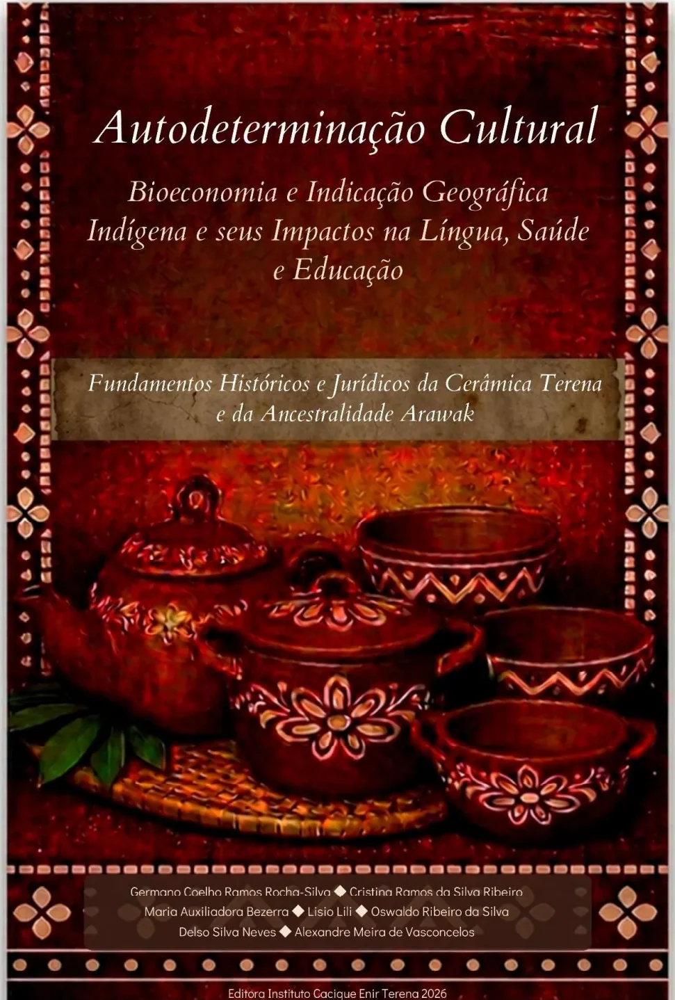
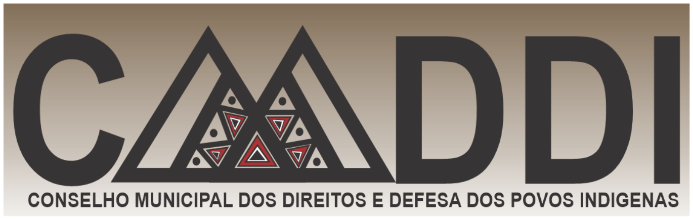
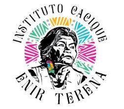

O livro como prova de autoria
Cada obra registra, com data, ISBN e autoria indígena, saberes que a propriedade intelectual convencional não protege. Publicar é também deixar prova de quem criou primeiro.

Livros que nascem do território, escritos por quem vive o saber. Digitais, acessíveis e abertos a todos.
Em 1995, famílias Terena ergueram em Campo Grande a Aldeia Urbana Marçal de Souza, reconhecida como a primeira aldeia urbana do país. Três décadas depois, é ali que nasce a Editora Cacique Enir Terena, criada por mulheres Terena e batizada com o nome da fundadora da aldeia, a primeira mulher eleita cacique em Mato Grosso do Sul.
Durante séculos, a história dos povos indígenas foi escrita por outros. Agora, a palavra dos povos indígenas de Mato Grosso do Sul tem casa própria: um selo que publica com autoria indígena, protege os saberes de quem os guarda e leva os livros a todo o mundo, gratuitamente. Terena, Guarani, Kaiowá, Kadiwéu, Guató, Ofaié, Kinikinau e Atikum: é o território que passa a escrever, e a narrar, a própria história.
Cada livro da Editora pode ser lido gratuitamente nesta página, com busca em todo o texto e leitura em voz alta.

Bioeconomia e Indicação Geográfica Indígena e seus Impactos na Língua, Saúde e Educação. Fundamentos históricos e jurídicos da cerâmica Terena e da ancestralidade Arawak.
Ler o livro →Novos títulos chegam pelo Prêmio Literário Saberes Originários e pelas comunidades parceiras.
A Editora Cacique Enir Terena é o selo editorial do Instituto Cacique Enir Terena (ICET), associação indígena da Aldeia Urbana Marçal de Souza, em Campo Grande. Seu nome homenageia a Cacique Enir Terena, fundadora da aldeia e primeira mulher eleita cacique em Mato Grosso do Sul.
Toda obra tem ao menos uma autora ou um autor indígena. Parceiros não indígenas participam ao lado deles.
O ICET arca com o ISBN e com o registro dos direitos autorais das obras do selo.
Autoria e titularidade ficam com os autores e as comunidades. Nenhum saber sagrado é publicado sem consentimento.
Os livros podem ser lidos gratuitamente, em edição digital acessível, com leitura em voz alta.
A Editora desenvolveu o próprio sistema de produção de livros digitais. Ele transforma o manuscrito em livro pronto, seguindo as normas da ABNT e os padrões internacionais de acessibilidade.
Recebe Word, LibreOffice, PDF e outros formatos, com notas, tabelas e imagens.
Monta folha de rosto, ficha catalográfica, sumário, referências e índice remissivo.
A obra é avaliada e aprovada por portaria, com auditoria completa do texto.
Gera EPUB 3 acessível, PDF paginado e leitura aberta na internet.
Emite exemplares numerados e cifrados, com senha individual, e traduções para outros idiomas.
No Brasil, editoras indígenas abriram caminhos que honramos: a UK'A Editorial, de Daniel Munduruku, levou a literatura indígena às escolas e à infância; a GRUMIN Edições, de Eliane Potiguara, deu voz à resistência das mulheres indígenas; a Pachamama, de Aline Pachamama, fez do livro bilíngue uma defesa das línguas originárias. A Editora Cacique Enir Terena chega para somar, com uma vocação que é só sua: fazer de cada livro um instrumento de proteção do saber de um povo.
Cada obra registra, com data, ISBN e autoria indígena, saberes que a propriedade intelectual convencional não protege. Publicar é também deixar prova de quem criou primeiro.
A Editora nasce dentro de uma instituição com marca coletiva registrada no INPI, a OREKA, e com a cerâmica Terena a caminho da indicação geográfica. O livro, a marca e o território caminham juntos.
Além da literatura, publica pesquisa feita a partir do território: bioeconomia, direito, saúde, língua e educação, escritas por quem vive esses temas na própria pele.
Um motor editorial desenvolvido pela própria Editora produz EPUB acessível, leitura gratuita na internet, exemplares numerados e cifrados e traduções para outros idiomas.
Nasce na primeira aldeia urbana do Brasil, fundada por mulheres Terena, com o nome do CMDDI autorizado pelo próprio Conselho e o apoio do Fórum dos Caciques de Mato Grosso do Sul.
A Editora é o coração de um programa mais amplo, desenvolvido pelo ICET com o CMDDI e o apoio do FOCAMS, que reúne, sob titularidade e governança indígenas, a publicação, a guarda e a proteção dos conhecimentos tradicionais dos povos indígenas de Mato Grosso do Sul.
Obras com ISBN, revisão por pares e acesso aberto, nascidas digitais e acessíveis.
Biotecnologia, medicina tradicional e artesanato, sempre com consentimento prévio, livre e informado das comunidades.
Aberto ou cego, para que saberes sagrados possam ser protegidos sem precisar ser publicados.
Vigilância sobre o uso não autorizado de grafismos, cerâmica, plantas medicinais e músicas indígenas.
Identifica a origem e a autora de cada obra de cerâmica e artesanato, valorizando quem a fez.
Uma chamada anual para revelar novas autoras e novos autores indígenas, inclusive em línguas originárias.
A autoria e a titularidade dos saberes permanecem sempre com as comunidades de origem.
A Editora Cacique Enir Terena vai atuar em breve no segmento audiovisual. As obras escritas ganharão áudios narrados em línguas indígenas, na voz de falantes das próprias comunidades, para que cada livro possa ser ouvido na língua de quem guarda o saber.
O uso do nome do Conselho Municipal dos Direitos e Defesa dos Povos Indígenas de Campo Grande (CMDDI) no selo editorial e nas obras já publicadas pelo ICET foi autorizado na 202ª Sessão Ordinária do Conselho, em 13 de novembro de 2026, que tratou da aprovação do projeto do selo editorial indígena.




RealizaçãoParceriaFale com a Editora pelo WhatsApp. A equipe orienta sobre o manuscrito, os direitos e as etapas de publicação.
Falar com a Editora